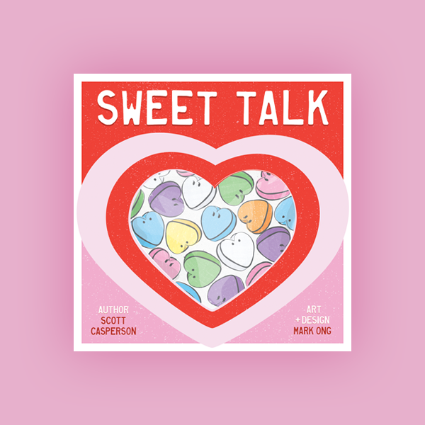
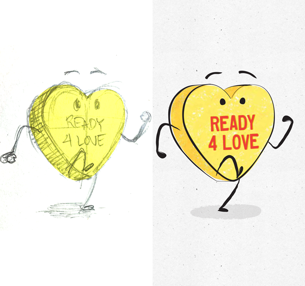

ILLUSTRATED
CHILDREN'S BOOK
2022ILLUSTRATION + DESIGN
- 
Illustrated book for kids about a leftover Valentine Candy looking for true love the day after Valentine’s Day. Commissioned art and design work from Scott Casperson of Mixed Messages Publishing
- 
Hand-colored, hand-drawn and converted to digital for scaleability to other potential creative assets.
Cover and back design pay tribute to the original “Sweethearts” candy, as an extension of the book concept.


- © systemzero5